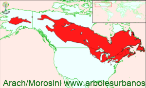

Click en las imágenes para ampliar

{kind=link}
{kind=link}
{kind=link}
- NOMBRE CIENTÍFICO
- Larix laricina
- FAMILIA BOTÁNICA
- Pináceas
- DESCRIPCIÓN GENERAL
- Tiene un porte mediano, llega a medir comúnmente entre 15 y 25 metros, en los mejores sitios supera los 30 y en los peores, los árboles maduros alcanzan solamente los 3.5 metros. Posee una copa estrechamente cónica. Su corteza juvenil es lisa y de color gris claro, mientras que cuando madura se vuelve de color pardo y se agrieta en pequeñas placas. Sus hojas son acículas reunidas en grupos de menos de 30, son suaves de color verde claro, que se vuelven amarillas en el otoño, antes de perderlas en el invierno.
- ESTRÓBILOS
- Estos aparecen a principio de la primavera, los masculinos son pequeños y de color amarillos, los femeninos son rojizos y crecen en las extremidades de las ramas, luego de ser fecundados se vuelve de color marrón claro y de consistencia semileñosa, son aovados de hasta 2 cm. de largo
- ORIGEN
- Su área de dispersión natural es muy grande desde la costa del noreste de Estados Unidos y Canadá, hasta Alaska, llegando a crecer más allá del Círculo Polar Ártico
- USOS
- en su lugar de origen, su madera se utiliza para pasta de celulosa y también para construcciones rurales debido a que resiste las inclemencias del tiempo
- REPRODUCCIÓN
- La multiplicación se realiza por semillas
- PARTICULARIDADES
- Junto con el género Pseudolarix, son los únicos las demás especies de larix, son las únicas pináceas deciduas de la familia de las pináceas
Tamarack, Alerce de Alaska